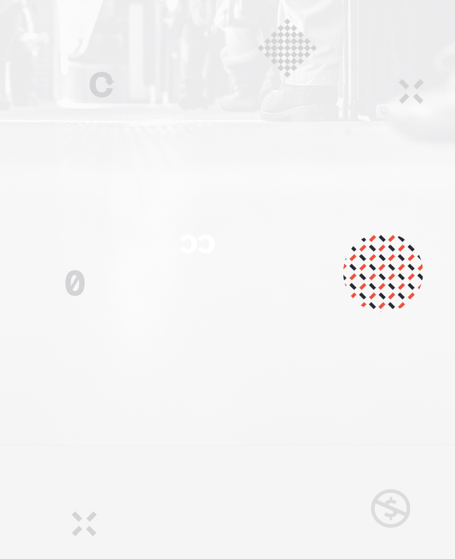
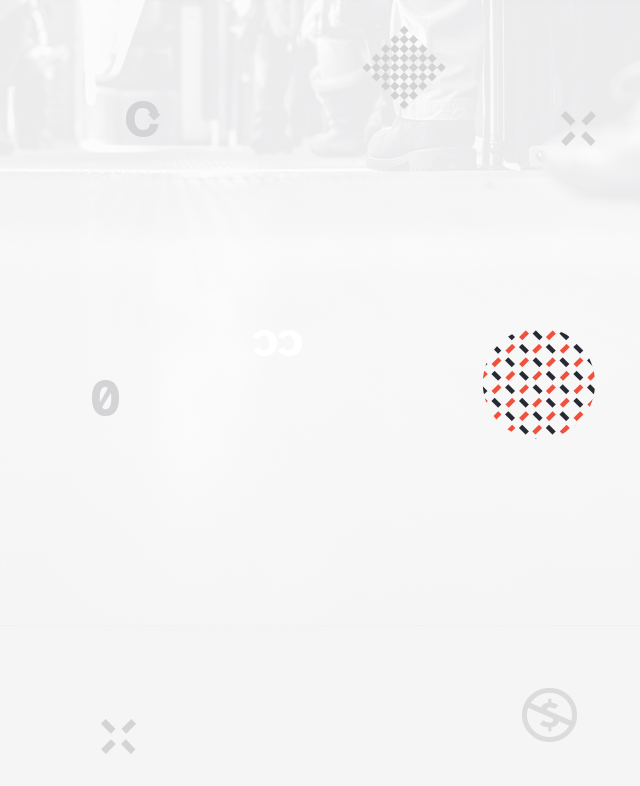

"Hello! Sharing world!"
Uefa Champions League 24/25
The ultimate stage where Europe's elite compete. A journey of skill, passion, and unforgettable moments awaits. Discover the matches, relive the highlights, and follow the teams in pursuit of football's most prestigious trophy.
2024.07.09 (WED)
Starting of UCL 24/25 Campaign